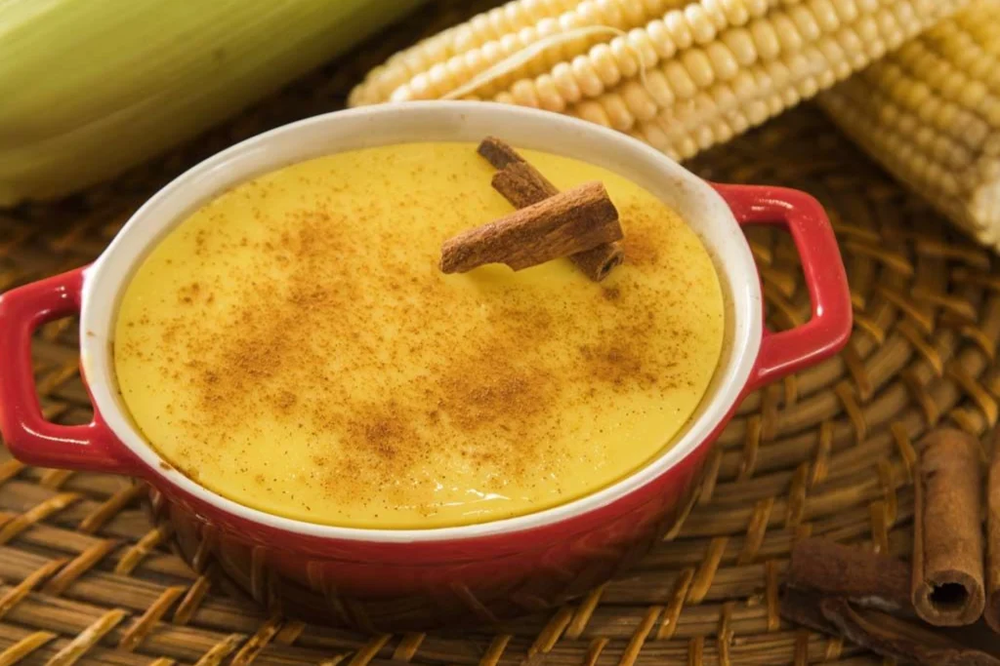
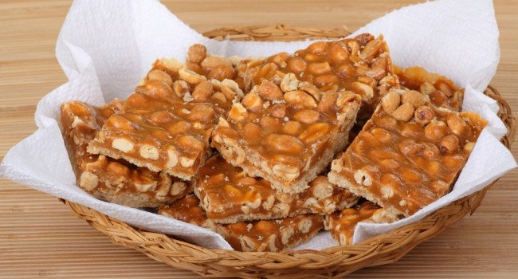

COMIDAS TÍPICAS

Bolo de Milho
Delicioso bolo feito com milho verde, uma tradição das festas juninas.

Canjica
Doce cremoso feito com milho, leite de coco e açúcar, servido quentinho.

Pé de Moleque
Doce tradicional feito com amendoim e rapadura, crocante e saboroso.